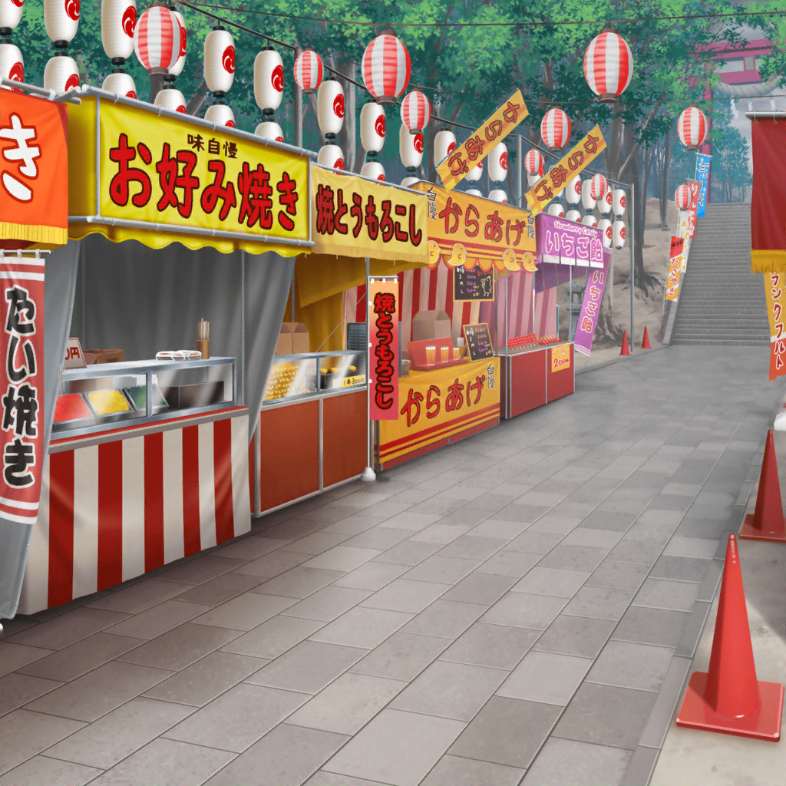

神社 参道
香澄
はぁ～、楽しかったね～。
紗夜先輩も来てくれたからすっごい盛り上がっちゃった♪
紗夜
ですから私は、たまたま通りかかっただけで……
こころ
紗夜がとっても上手だった、あれ、なんて言ったかしら？
銃みたいなやつで、景品を落とすやつ
美咲
射的ね？
こころ
そう、それ！ 紗夜は、本当に射的がうまかったわね！
今度、あたしにも教えてほしいわ！
香澄
私も私も！
ホント、百発百中って感じだったもんね！
お店の人も、ビックリしてたし！
紗夜
要領がとても弓道と似ていたから。
だけど、あんなに当たったのは、きっとまぐれだと思います。
私も射的は初めてだから
香澄
え？ 初めてだったんですか！？
ていうか紗夜先輩って、こういうお祭りとか
あんまり来ないんですか？
紗夜
小さいころは日菜と一緒にお祭りに行くこともあったけれど、
最近はその機会も減りましたね。
だから今日は、少しだけ新鮮な気持ち、というのかしら？
香澄
それ、私も一緒です！
私も、みんなの前で和太鼓の演奏するの初めてなんで、
いつもよりキラキラドキドキしてるんです！
美咲
あ、そろそろ、宇田川さんと合流したほうがよくない？
演奏の時間もだんだん近づいてきたし。
軽くウォーミングアップもしないとダメだよね
香澄
あ、そっか！ 確かにそうだね！
それじゃあ、巴ちゃんのところに行こう！

神社 神楽殿
香澄
巴ちゃん、お待たせー！
巴
待ってたぞ、みんな！ って……
おぉっ！？ 紗夜さんも来てくれたんですね！？
紗夜
はい。
ご迷惑かとも思ったんですが……
巴
迷惑だなんて、そんなわけないですって！
和太鼓の演奏を聴いてくれる人が増えてくれるだけで
アタシはすごい嬉しいですよ！
紗夜
だけど私が来ると、雨が……
巴
あはは！ そんなことあるわけないですから！
現に雨なんて――
巴
……え？
美咲
わ……雨だ。
こ、このタイミングで、ホントに降ってきちゃったし……
紗夜
だから言ったでしょ？ 私が来ると、こうなってしまうって。
やっぱり私は帰ったほうが……
巴
いやいや！ こんなの偶然ですって！
紗夜さんが気にすることじゃないですから！
香澄
私もそう思います！
紗夜先輩！ 今日のために一生懸命練習したんで、
私達の演奏、見ていってくださいよ～！
こころ
そうよ！
せっかく来たんだから、演奏を見たほうが楽しいわよ！
きっと紗夜も笑顔になれると思うわ！
紗夜
だけど……
香澄
ていうか、大丈夫です！
この雨雲、私達の気合いで吹き飛ばしちゃいますから！
美咲
……あ。
今ちょっとスマホで天気予報見てみたんだけど、
このあとの天気、雨のち晴れの予報になってるよ……
香澄
それじゃあ、みんなで、この雨雲を吹き飛ばしちゃうような
気合いを入れてみようよ！
こころ
それよ！ あたし達が気合いを入れれば、
きっと太陽だって出てきてくれるはずよ！
巴だって、そう思うでしょ！？
巴
いやいや、いくらなんでも……
気合いは絶対に重要だとは思うけど、
それで晴れるかっていうと、さすがにそれは……
こころ
そんなのやってみなくちゃわからないわ！
美咲
あのさ、こころも戸山さんもちょっと落ち着いてって。
天気予報は、このあと雨のち晴れなんだけど……
こころ
気合いを入れる掛け声はもちろん、
『ハッピー！ ラッキー！ スマイル！ イエーイ！！』よね？
香澄
え！？
『ポピパ！ ピポパ！ ポピパパピポパ！』が、
私的には気合いが入るんだけど！？
こころ
それじゃあ、間をとって
『ハッピー！ ラッキー！ ポピパパ！ ピポパ！』に
しましょう！
香澄
あ、それいいね！ それでいこう、こころん！
美咲
あ、あの、だからね……
天気予報だと、このあと――
香澄
それじゃあ、いっくよ～――
こころ・香澄
ハッピー！ ラッキー！ ポピパパ！ ピポパ！
空よ～、晴れろーーーーーっ！
美咲
（だ、ダメだ、この人達……
２人の世界で盛り上がっちゃって、
全然人の話聞いてないし……）
巴
……ん？
おぉっ！？
今ちょっと、雲が薄くなった気がしたぞ！
美咲
（えっ！？ 宇田川さん！？）
香澄
だよね！？ 私も今、そう思った！
なんか向こうの方の空が明るくなった気がする！
私達の気合いが通じたんだよ！
巴
これは……あるぞっ！
もともとこのお祭りって、晴天を祈願するお祭りだからな！
やっぱ、そういう力があるのかもな〜！
美咲
（うわー……
なんか見かけによらず宇田川さんも、結構キテるなー……）
巴
ちょっと待ってな！
今、アタシ、気合い入れて太鼓叩いてみるから！
いくぜ～～～～っ！ ソイヤ～～～～っ！
巴
うっわ！ す、すっげーっ！
向こうの空、今、明らかに雲が薄くなったぞ！
見たよなっ！？
香澄
今のは絶対間違いない！
今のは、巴ちゃんの気合いが届いた感じした！
こころ
巴！ その調子よ！
もっともっと気合いを入れましょう！
巴
マジで、あるんだな～、こんなことって！
やっぱ、大事なのは気合いなんだなっ！
美咲
（気合いじゃなくて、気圧だってば！
……ていうか、宇田川さんまで、
完全にあっちの世界の住人になってるんだけど……）
巴
紗夜さん！ この感じなら、すぐに雨もやむと思います！
アタシ達に任せてくださいっ！
紗夜
……は、はい
美咲
（宇田川さん……
こころと戸山さんと完全にシンクロしてるし……
あの人、実は結構ヤバイ人なのかもしれない……）